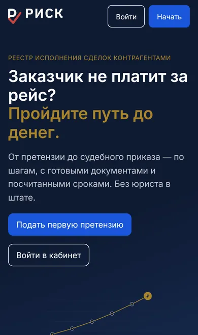
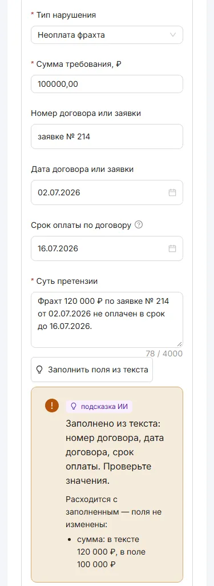
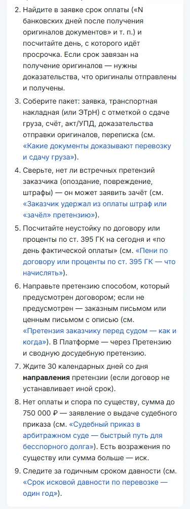
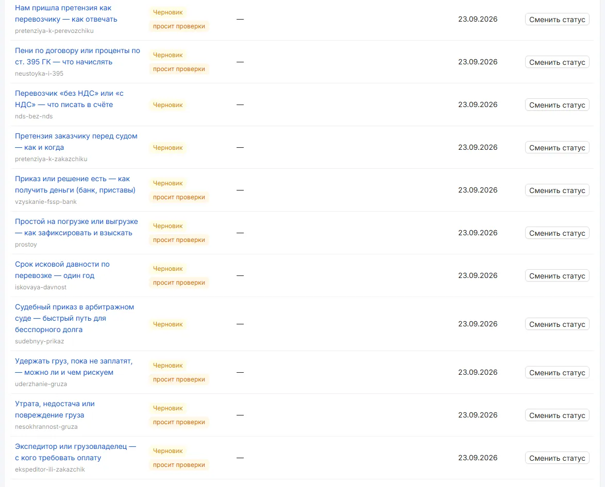

RISK: carriers chase unpaid freight bills without a lawyer on staff, and AI only advises
RISK is a closed B2B platform for the freight industry. It walks a carrier from a payment claim to a pre-trial demand and then to a court order or lawsuit, with documents and deadlines ready. My job here was to put an LLM inside a legal workflow without letting it break a document: amounts, dates, and legally binding wording stay with code and templates.
The business problem
A carrier or freight forwarder finishes a trip, and the client doesn’t pay. Small trucking companies have no lawyer on staff. They don’t know which claim to send, how long to wait, when to go to court, or how to calculate the penalty. Money gets lost to missed deadlines and paperwork mistakes.
The platform walks them through it step by step and assembles the documents. AI was a separate problem. In a legal document, a wrong amount or date costs real money. So the model must never invent numbers, never see personal data it doesn’t need, and never take the product down when it fails.
What I built
First came a platform that works with no AI at all: anything that affects money or deadlines is computed in code. Then AI went on top, behind data masking, a number guard and feature flags.
- Carrier portal. A claim wizard: several demands in one draft, attachments, statuses, publishing to the registry.
- Counterparty registry. A profile per company tax ID with claim statistics and a watch option.
- Documents. The pre-trial demand and the court order application, rendered from templates to PDF with a mailing package. The penalty calculator is plain code.
- Moderation. A review queue with an SLA. The AI gives the human moderator a checklist of evidence and a recommendation. Code sets the threshold and weights; the moderator decides.
- AI adapter. One entry point to the model, with cli, api, mock, and off drivers. Before the call it masks personal data: names, phone numbers, emails, and passport details become tokens like [NAME-1], and the real values go back in after the response. The call log stores no text.
- Number guard. A model response is accepted only if every amount, date, reference number, and statute in it appears in the input. Otherwise the document falls back to the template.
- Features behind flags. A draft of the claim summary from the wizard fields, and the reverse: parsing free text back into fields. Drafts of legal reasoning, and the circumstances section of the claim and the application. Each one is turned on by a flag as a lawyer signs off on it. If the model is down, the product works without AI.
- Knowledge base and assistant. “Disputed situations” reference cards with semantic search on pgvector. The chat assistant answers only from those cards and the case data.
- Everything else. Automatic payment matching with the bank, SMS codes, support chat, pricing plans, an admin panel.
- model-based agent
- code, no model
- human decision
- interface and data
Results
- Sep 21, 2026platform went live, pilot underway
- 15 releasesin 18 days
- 900+ commitssince Aug 2, 2026
- 180+ ADRsarchitecture decisions on record
- ~45 sexpected time for an AI draft; small tasks ~3 s
As of Oct 9, 2026. The pilot has just started, so there are no user or revenue numbers here yet. AI features are turned on by flags as a lawyer reviews them.
What it looks like




Stack
- AI
- Claude Sonnet and Haiku through a custom adapter: PII masking, number guard, feature flags; pgvector for search
- Backend
- Node 22, TypeScript, Hono, Drizzle ORM; PostgreSQL, Redis, S3
- Frontend
- React, Vite, Ant Design
- Infrastructure
- Docker Compose; GitHub Actions: staging from main, production by tag; GlitchTip